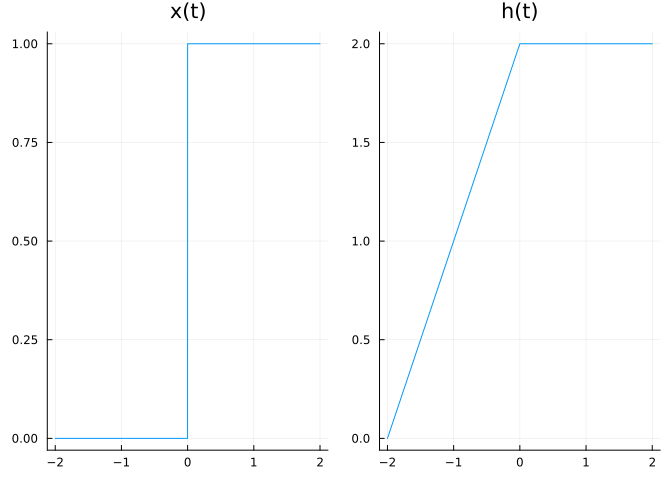
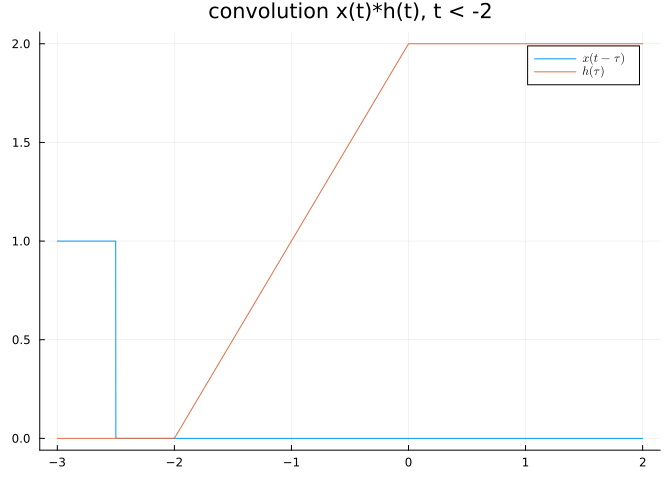
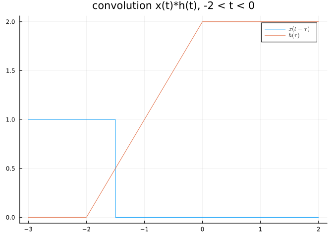
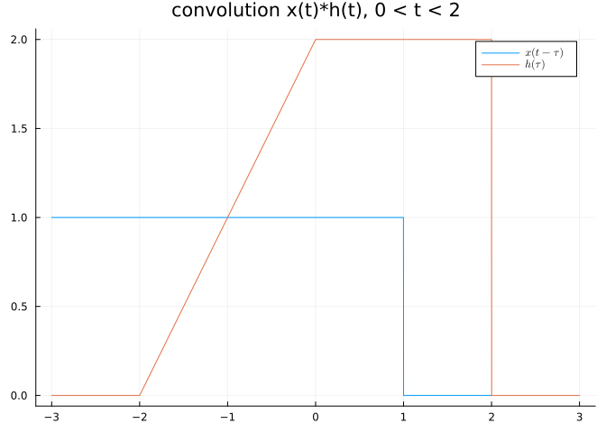
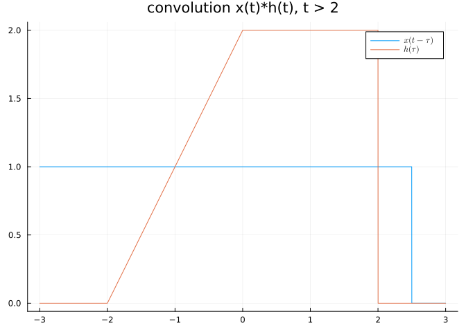
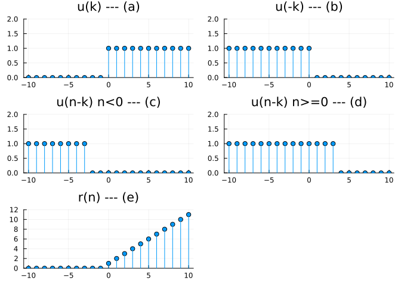

function step(t)
if t >= 0
return 1
else
return 0
end
end
function ramp(t)
return t*step(t)
end ramp (generic function with 1 method)秦米书
September 10, 2023
This is a note for Signal and System a Primer with Matlab. I don’t have Matlab, but I may use Scilab/Octave/Python/Julia/R/Haskell instead when necessary.
Signal: x(t), function of time, simplified definition.
System: A collection of devices that operate on input signal x(t) and produce output signal y(t).
Continuous time signal: takes a value at every instant of time.
Discrete time signal: is only defined at particular instant of time.
Periodic vs nonperiodic signals
Analog vs digital signals
ADC: Analog to Digital Converter
For continuous signal x(t), the normalized energy E of x(t) is (assuming x(t) is real)
\[ E = \int_{-\infty}^{+\infty} x(t)^2 dt \]
The normalized power P is
\[ P = \lim\limits_{T \rightarrow \infty} \frac{1}{T} \int_{-T/2}^{+T/2} x(t)^2 dt \]
If x(t) is complex valued
\[ E = \int_{-\infty}^{+\infty} \vert x(t) \vert ^2 dt \]
The normalized power P is
\[ P = \lim\limits_{T \rightarrow \infty} \frac{1}{T} \int_{-T/2}^{+T/2} \vert x(t) \vert ^2 dt \]
For discrete time signal x[n]
\[ E = \sum_{n = -\infty}^{+\infty} \vert x[n] \vert ^2 \]
The normalized power P
\[ P = \lim\limits_{N \rightarrow \infty} \frac{1}{2N+1} \sum_{n = -N}^{+N} \vert x[n] \vert ^2 \]
Energy signal: \(0<E<\infty\)
Power signal: \(0<P<\infty\)
Even vs Odd signal
Any signal can be represented as sum of even and odd signals
\[ \begin{align} x(t) = x_e(t) + x_o(t) \\ x_e(t) = \frac{1}{2} ( x(t) + x(-t) ) \\ x_o(t) = \frac{1}{2} ( x(t) - x(-t) ) \end{align} \]
Unit step function u(t)
\[ u(t) = \begin{cases} 1 &\text{t > 0} \\ 0 &\text{t < 0} \end{cases} \]
Unit impulse function \(\delta(t)\)
\[ \delta(t) = \frac{d}{dt}u(t) = \begin{cases} 0 & t \ne 0 \\ \text{undefined} & t = 0 \end{cases} \]
The impulse function has the property(called sampling or sifting property)
\[ \int_{a}^{b} f(t) \delta(t-t_0) dt = \int_{a}^{b} f(t_0) \delta(t-t_0) dt = f(t_0) \int_{a}^{b} \delta(t-t_0) dt = f(t_0) \]
Unit ramp function
\[ r(t) = t \times u(t) \]
Unit rectangle pulse function
Unit triangular pulse function
sinusoidal signal
exponential signal
Unit step sequence
\[ u(n) = \begin{cases} 0 &\text{n < 0} \\ 1 & n \ge 0 \end{cases} \]
Unit impulse sequence
\[ \delta(n) = \begin{cases} 0 & n \ne 0 \\ 1 & n = 0 \end{cases} \]
Unit ramp sequence
\[ r(n) = \begin{cases} 0 & n < 0 \\ n & n \ge 0 \end{cases} \]
Sinusoidal sequence
Exponential sequence
Time reversal
Time scaling
Time shifting
Amplitude transformation
continuous time vs discrete time systems
causal vs noncausal systems: A causal system is one whose output y(t) at present time depends only on the present and past values(not future) of the input x(t).
linear and nonlinear systems: Linearity is the property of the system describing a linear relationship between input (cause) and output (effect). The property is a combination of both homogeneity(scaling) property and the additivity property. The homogeneity property requires that if the input is multiplied by any constant k, then the output is multiplied by the same constant. The additivity property requires that the response to a sum of inputs is the sum of the responses to each input applied separately.
\[ T \lbrace k_1 x_1 + k_2 x_2 \rbrace = k_1 y_1 + k_2 y_2 \]
time varying and time invariant systems: A time-varying system is one whose parameters vary with time. In a time-invariant system, a time shift (advance or delay) in the input signal leads to the time shift in the output signal.
systems with and without memory: When the output of a system depends on the past and/or future input, the system is said to have a memory. A memoryless system is one in which the current output depends only on the current input; it does not depend on the past or future inputs.A system with a memory is also called a dynamic system. A memoryless system is called a static system.
The behavior of the system can be described mathematically either in the time domain or in the frequency domain.
Convolution is a tool for time-domain analysis of systems.
LTI system: Linear, time-invariant system
The impulse response h(t) is the response of the system when the input is the unit impulse function \(\delta(t)\), that is,
\[ h(t) = T \delta(t) \]
The input signal x(t) can be expressed as (\(\tau\) is a dummy variable) the below equation. It is the sifting property of the unit impulse.
\[ x(t) = \int_{-\infty}^{+\infty} x(\tau) \delta(t-\tau)d\tau \]
The response y(t) to the input x(t) is obtained by:
\[ \begin{align} y(t) &= Tx(t)=T \lbrace \int_{-\infty}^{+\infty} x(\tau) \delta(t-\tau)d\tau \rbrace \\ &= \int_{-\infty}^{+\infty} x(\tau) T \lbrace \delta(t-\tau) \rbrace d\tau \\ &= \int_{-\infty}^{+\infty} x(\tau) h(t-\tau) d\tau \end{align} \]
This shows that an LTI system is characterized by its impulse response.
The below equation is also called convolution integral or superposition integral.
\[ y(t) = \int_{-\infty}^{+\infty} x(\tau) h(t-\tau) d\tau \]
The convolution of two signals x(t) and h(t) is usually written in terms of the operator *. That is, y(t) equals x(t) convolved with h(t).
\[ y(t) = x(t) * h(t) = \int_{-\infty}^{+\infty} x(\tau) h(t-\tau) d\tau \]
We can split the integral into two parts:
\[ y(t) = x(t) * h(t) = \int_{-\infty}^{t_0} x(\tau) h(t-\tau) d\tau + \int_{t_0}^{+\infty} x(\tau) h(t-\tau) d\tau \]
The 1st part is \(y_{zir}\), the 2nd part is \(y_{zsr}\).
ZIR: Zero Input Response. (natural response)
ZSR: Zero State Response. (the forced response)
\(t_0\) is the initial time.
The convolution integral can be simplified if we assume that a system has two properties.
First, if x(t) = 0 for t < 0, then
\[ y(t) = x(t) * h(t) = \int_{-\infty}^{+\infty} x(\tau) h(t-\tau) d\tau = \int_{0}^{+\infty} x(\tau) h(t-\tau) d\tau \]
Second, if we assume that the system is causal (that is y(t) does not depend on future signal of x(t) or h(t)), h(t) = 0 for t < 0, the equation becomes,
\[ y(t) = x(t) * h(t) = \int_{-\infty}^{+\infty} x(\tau) h(t-\tau) d\tau = \int_{0}^{t} x(\tau) h(t-\tau) d\tau \]
Important properties of the convolution integral:
The order in which two functions are convolved is unmportant.
Width property. If the durations of x(t) and h(t) are \(T_1\) and \(T_2\), then the duration of \(y(t) = x(t) * h(t)\) is \(T_1 + T_2\). If the areas under x(t) and h(t) are \(A_1\) and \(A_2\), then the area under \(y(t) = x(t) * h(t)\) is \(A_1A_2\).
The convolution integral can be evaluated in 3 different ways:
Graphical method of evaluating the convolution integral. This method usually involves 4 steps:
We are going to use the below auxiliary functions.
ramp (generic function with 1 method)Obtain the convolution of the two signals in Figure 1
using Plots
using LaTeXStrings
x(t) = step(t)
h(t) = ramp(t+2) * step(-t) + 2*step(t)*step(2-t)
xplot = plot(x,-2,2,title="x(t)")
hplot = plot(h,-2,2,title="h(t)")
plot(xplot,hplot,layout=(1,2), legend=false)
Definition of x(t) \[ x(t) = step(t) \]
Definition of h(t) \[ h(t) = \begin{cases} 2+t &\text{-2 < t < 0} \\ 1 &\text{0 < t < 2} \end{cases} \]
In this case, it is easy to fold x(t), the unit step function. Let
\[ y(t) = x(t)*h(t) = \int x(t-\tau)h(\tau)d\tau \]
First, we fold x(t)
and shift it by t
For \(t < -2\), there is no overlap of the two signals, as shown in Figure 2 , Hence,
\[ y(t) = x(t) * h(t) = 0, t< -2 \]
t = -2.5
plot(x_shift,-3,2,label=L"x(t - \tau)")
plot!(h,-3,2,label=L"h(\tau)")
title!( "convolution x(t)*h(t), t < -2")
For -2 < t < 0, the two signals overlap between -2 and t, as shown in figure Figure 3 , Hence,
\[ \begin{align} y(t) &= \int_{-2}^{t} x(t-\tau)h(\tau)d\tau \\ &= \int_{-2}^{t} (1)(2+\tau) d\tau \\ &= 2\tau + \frac{\tau^2}{2} \biggr\rvert_{-2}^{t} = 0.5 t^2 + 2t + 2, \text{-2 < t < 0} \end{align} \]
t = -1.5
plot(x_shift,-3,2,label=L"x(t - \tau)")
plot!(h,-3,2,label=L"h(\tau)")
title!( "convolution x(t)*h(t), -2 < t < 0")
For 0 < t < 2, the two signals overlap between -2 and t, as shown in figure Figure 4 , Hence,
\[ \begin{align} y(t) &= \int_{-2}^{t} x(t-\tau)h(\tau)d\tau \\ &= \int_{-2}^{0} (1)(2+\tau) d\tau + \int_{0}^{t}(1)(2) d\tau \\ &= (2 \tau + \frac{\tau^2}{2}) \biggr\rvert_{-2}^{0} + 2 \tau \biggr\rvert_{0}^{t} \\ &= 2+2t , \text{0 < t < 2} \end{align} \]
t = 1
plot(x_shift,-3,2,label=L"x(t - \tau)")
plot!(h,-3,3,label=L"h(\tau)")
title!( "convolution x(t)*h(t), 0 < t < 2")
For t > 2, the two signals overlap between -2 and 2, as shown in figure Figure 5 , Hence,
\[ \begin{align} y(t) &= \int_{-2}^{t} x(t-\tau)h(\tau)d\tau \\ &= \int_{-2}^{0} (1)(2+\tau) d\tau + \int_{0}^{2}(2)(2) d\tau \\ &= (2 \tau + \frac{\tau^2}{2}) \biggr\rvert_{-2}^{0} + 2 \tau \biggr\rvert_{0}^{2} \\ &= 6 , \text{ t > 2} \end{align} \]
t = 2.5
plot(x_shift,-3,3,label=L"x(t - \tau)")
plot!(h,-3,3,label=L"h(\tau)")
title!( "convolution x(t)*h(t), t > 2")
Combining the results, we obtain, see Figure 6
\[ y(t) = \begin{cases} 0.5t^2 + 2t + 2, &\text{-2 < t < 0} \\ 2t+2, &\text{0 < t < 2} \\ 6, &\text{ t > 2} \\ 0, &\text{otherwise} \end{cases} \]
The commutative property of the convolution integral.
flowchart LR
subgraph g1[1]
direction LR
x["x(t)" ]-->h["h(t)" ]-->y["y(t)"];
style x stroke-width:0px
style y stroke-width:0px
end
subgraph g2[2]
direction LR
h1["h(t)" ]-->x1["x(t)" ]-->y1["y(t)"];
style h1 stroke-width:0px
style y1 stroke-width:0px
end
g1-.-|equals|g2
The associative property of the convolution integral.
flowchart LR
subgraph g1[1]
direction LR
x["x(t)" ]-->h1["h1(t)" ]-->h2["h2(t)" ]-->y["y(t)"];
style x stroke-width:0px
style y stroke-width:0px
end
subgraph g2[2]
direction LR
xx["x(t)" ]-->convolution["h1(t)*h2(t)" ]-->yy["y(t)"];
style xx stroke-width:0px
style yy stroke-width:0px
end
g1-.-|equals|g2
The distributive property of the convolution integral.
flowchart LR
subgraph g1[1]
direction LR
x["x(t)"]-->h1["h1(t)"] & h2["h2(t)"]
h1-->y["y(t)"]
h2-->y
style x stroke-width:0px
style y stroke-width:0px
end
subgraph g2[2]
direction LR
xx["x(t)" ]-->addition["h1(t)+h2(t)" ]-->yy["y(t)"];
style xx stroke-width:0px
style yy stroke-width:0px
end
g1-.-|equals|g2
Unit step sequence definition
\[ u[n] = \begin{cases} 0 \ n < 0 \\ 1 \ n \ge 0 \end{cases} \]
Unit impulse sequence definition
\[ \delta(n) = \begin{cases} 0 \ n \ne 0 \\ 1 \ n = 0 \end{cases} \]
An alternative way of expressing any discrete signal x[n]. I.e. we can represent x[n] as a weighted sum of delayed impulses.
\[ x[n] = \sum_{k=-\infty}^{\infty} x[k] \delta[n-k] \]
The multiplication property of the impulse function is (The 2 equations hold because \(\delta[n] = 1\) only if n is 0 )
\[ \begin{align} \delta[n] x[n-k] &= x[-k] \delta[n] \\ \delta[n-k] x[n] &= x[k] \delta[n-k] \end{align} \]
The impulse response h[n] of of a discrete LTI system is the response of the system when the input is \(\delta[n]\). I.e.
\[ h[n] = T\{\delta[n]\} \]
or
flowchart LR
delta["δ[n]" ]-->s["system T" ]-->h["h[n]"];
style delta stroke-width:0px
style h stroke-width:0px
The convolution of the discrete input signal x[n] and impulse response h[n] is (* is the convolution symbol)
\[ y[n] = x[n] * h[n] \]
It is defined as
\[ y[n] = \sum_{k=-\infty}^{\infty} x[k] h[n-k] \]
This is known as the convolution sum or superposition sum for the system response.
As in continuous time convolution, one of the signals is time-inverted, shifted and then multiplied by the other. By the change of variables \(m=n-k\), we have (m in the below equation, and k in the above equation are called dummy variables)
\[ y[n] = \sum_{m=-\infty}^{\infty} x[n-m] h[m] \]
This shows the order of summation is immaterial; discrete convolution is commutative.
Properties of convolution sum.
\[ \begin{align} & x[n]*h[n] = h[n]*x[n] \quad \text{commutative} \\ & f[n]*[x[n]+y[n]] = f[n]*x[n] + f[n]*y[n] \quad \text{distributative} \\ & f[n]*[x[n]*y[n]] = [f[n]*x[n]]*y[n] \quad \text{associative} \\ & x[n-m]*h[n-k] = y[n-m-k] \quad \text{shifting} \\ & x[n]*\delta[n] = x[n] \end{align} \]
If both x[n] and h[n] are causal, that is, x[n] and h[n] are 0 for all $ n < 0 $, the summation becomes
\[ y[n] = \sum_{m=0}^{n} x[n-m] h[m] \]
The convolution of M-point sequence with a N-point sequence produces an (M+N-1)-point sequence.
Evaluating the convolution sum requires the following steps:
Example, find r[n], given that r[n] is the convolution of 2 unit step sequences, that is
\[ r[n] = u[n] * u[n] \]
Solution:
\[ r[n] = u[n] * u[n] = \sum_{k=-\infty}^{\infty} u[k] u[n-k] \]
The function u[k], u[-k], u[n-k] are shown in in@fig-discrete-convolution-ex . The convolution takes place when we multiply the sequences (a) with (c) and (d).
For \(n<0\), the non-zero values of u[k] and u[n-k] do not overlap, so \(u[k] u[n-k] = 0\) for all values of k. This implies that \(r[n] = 0\) for \(n < 0\).
For \(n \ge 0\), he non-zero values of u[k] and u[n-k] overlap. This overlap begins with u[k] at k = 0 and ends with u[n-k] at k = n. Hence,
\[ r[n] = \sum_{k=0}^n u[k]u[n-k] = \sum_{k=0}^n (1) = n + 1 \]
Therefore (considering both \(n<0\) and \(n \ge 0\)), \(r[n] = (n+1)u[n]\). This is the unit ramp sequence and is shown in (e).
using Plots
u(k)=begin
if k >= 0
1
else
0
end
end
n = -3
xs = collect(-10:10)
y_u_k = u.(xs)
y_minus_u_k = u.(xs*(-1))
#n < 0
y_n_minus_k = u.((xs .- n)*(-1))
u_k = plot(xs,y_u_k,seriestype=:sticks,markershape=:circle, ylimit=[0,2],legend=false,title="u(k) --- (a)")
u_minus_k = plot(xs,y_minus_u_k,seriestype=:sticks,markershape=:circle, ylimit=[0,2],legend=false,title="u(-k) --- (b)")
u_n_minus_k = plot(xs,y_n_minus_k,seriestype=:sticks,markershape=:circle, ylimit=[0,2],legend=false,title="u(n-k) n<0 --- (c)")
n = 3
# n > 0
y_n_minus_k = u.((xs .- n)*(-1))
u_n_minus_k_n_gt_0 = plot(xs,y_n_minus_k,seriestype=:sticks,markershape=:circle, ylimit=[0,2],legend=false,title="u(n-k) n>=0 --- (d)")
r(k) = u(k)*(k+1)
r_sequence = r.(xs)
r_n = plot(xs,r_sequence,seriestype=:sticks,markershape=:circle, ylimit=[0,12],legend=false,title="r(n) --- (e)")
plot(u_k,u_minus_k,u_n_minus_k,u_n_minus_k_n_gt_0,r_n,layout=(3,2))
The commutative property
flowchart LR
subgraph g1[1]
direction LR
x["x[n]" ]-->h["h[n]" ]-->y["y[n]"];
style x stroke-width:0px
style y stroke-width:0px
end
subgraph g2[2]
direction LR
h1["h[n]" ]-->x1["x[n]" ]-->y1["y[n]"];
style h1 stroke-width:0px
style y1 stroke-width:0px
end
g1-.-|equals|g2
The associative property
flowchart LR
subgraph g1[1]
direction LR
x["x[n]" ]-->h1["h1[n]" ]-->h2["h2[n]" ]-->y["y[n]"];
style x stroke-width:0px
style y stroke-width:0px
end
subgraph g2[2]
direction LR
xx["x[n]" ]-->convolution["h1[n]*h2[n]" ]-->yy["y[n]"];
style xx stroke-width:0px
style yy stroke-width:0px
end
g1-.-|equals|g2
The distributive property
flowchart LR
subgraph g1[1]
direction LR
x["x[n]"]-->h1["h1[n]"] & h2["h2[n]"]
h1-->y["y(t)"]
h2-->y
style x stroke-width:0px
style y stroke-width:0px
end
subgraph g2[2]
direction LR
xx["x[n]" ]-->addition["h1[n]+h2[n]" ]-->yy["y[n]"];
style xx stroke-width:0px
style yy stroke-width:0px
end
g1-.-|equals|g2